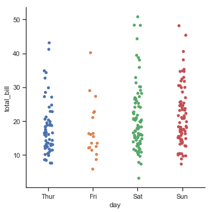
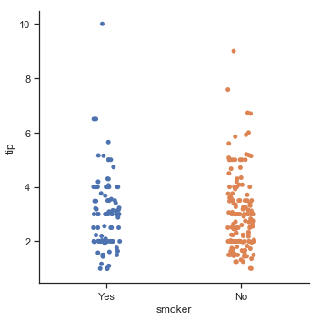
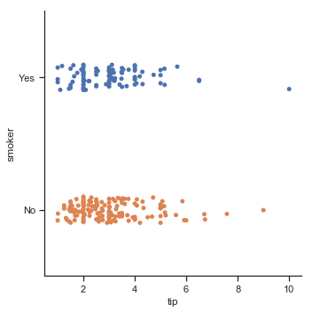
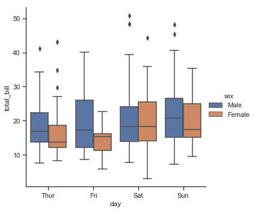
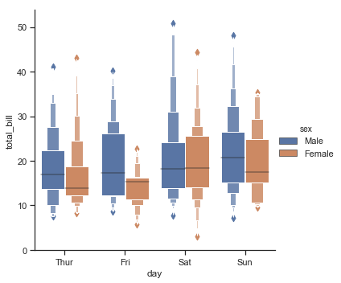
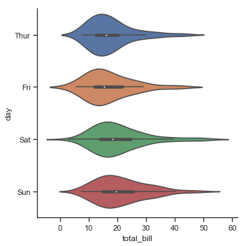
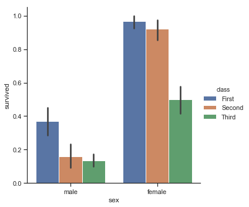
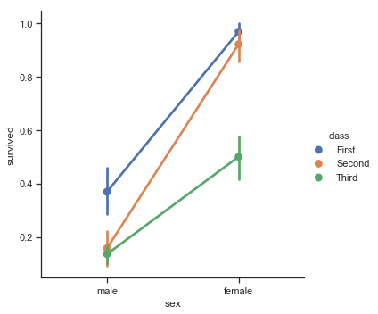
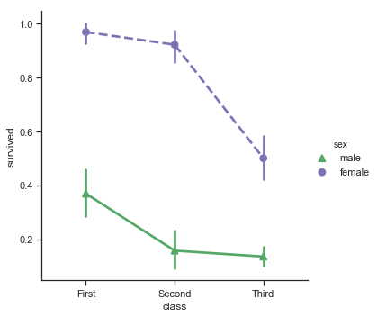

分类数据可视化
In seaborn, there are several different ways to visualize a relationship involving categorical data. Similar to the relationship between relplot() and either scatterplot() or lineplot(), there are two ways to make these plots. There are a number of axes-level functions for plotting categorical data in different ways and a figure-level interface, catplot(), that gives unified higher-level access to them.
catplot()
Categorical scatterplots:
- stripplot() (with kind=”strip”; the default)
- swarmplot() (with kind=”swarm”)
Categorical distribution plots:
- boxplot() (with kind=”box”)
- violinplot() (with kind=”violin”)
- boxenplot() (with kind=”boxen”)
Categorical estimate plots:
- pointplot() (with kind=”point”)
- barplot() (with kind=”bar”)
- countplot() (with kind=”count”)
1 | import seaborn as sns |
分类散点图
1 | tips = sns.load_dataset("tips") |
| total_bill | tip | sex | smoker | day | time | size | |
|---|---|---|---|---|---|---|---|
| 0 | 16.99 | 1.01 | Female | No | Sun | Dinner | 2 |
| 1 | 10.34 | 1.66 | Male | No | Sun | Dinner | 3 |
| 2 | 21.01 | 3.50 | Male | No | Sun | Dinner | 3 |
| 3 | 23.68 | 3.31 | Male | No | Sun | Dinner | 2 |
| 4 | 24.59 | 3.61 | Female | No | Sun | Dinner | 4 |
1 | sns.catplot(x='day',y='total_bill',data=tips) |
<seaborn.axisgrid.FacetGrid at 0x1a156aa940>

1 | #The jitter parameter controls the magnitude of jitter or disables it altogether: |

beeswarm，即swarmplot()
1 | sns.catplot(x="day", y="total_bill", kind="swarm", data=tips); |

1 | #也支持hue参数进行分类，但是不支持style |

1 | #也可以在轴上对一个参数进行分类,参数order |
<seaborn.axisgrid.FacetGrid at 0x1a2196da58>

1 | # x,y轴是很自由的，换一种展现方式 |
<seaborn.axisgrid.FacetGrid at 0x1a21ae6f28>

分类分布图
箱线图
The first is the familiar boxplot(). This kind of plot shows the three quartile values of the distribution along with extreme values. The “whiskers” extend to points that lie within 1.5 IQRs of the lower and upper quartile, and then observations that fall outside this range are displayed independently. This means that each value in the boxplot corresponds to an actual observation in the data.
‘晶须’延伸到1.5IQR(第一四分位和第三四分位的距离)，然后显示范围之外的独立点。
1 | sns.catplot(x='day',y='total_bill',kind='box',data=tips) |
<seaborn.axisgrid.FacetGrid at 0x1a21bafda0>

1 | sns.catplot(x='day',y='total_bill',kind='box',hue='sex',data=tips) |
<seaborn.axisgrid.FacetGrid at 0x1a21975d30>

A related function, boxenplot(), draws a plot that is similar to a box plot but optimized for showing more information about the shape of the distribution. It is best suited for larger datasets:
1 | sns.catplot(x='day',y='total_bill',kind='boxen',hue='sex',data=tips) |
<seaborn.axisgrid.FacetGrid at 0x1a21ba7128>

Violinplots
which combines a boxplot with the kernel density estimation procedure described in the distributions tutorial.
内核密度估计过程？
1 | sns.catplot(x='total_bill',y='day',kind='violin',data=tips) |
<seaborn.axisgrid.FacetGrid at 0x1a220c1cf8>

1 | sns.catplot(x="day", y="total_bill", hue="sex", |

分类估计图
For other applications, rather than showing the distribution within each category, you might want to show an estimate of the central tendency of the values. Seaborn has two main ways to show this information. Importantly, the basic API for these functions is identical to that for the ones discussed above.
Bar plots
1 | titanic = sns.load_dataset("titanic") |
| survived | pclass | sex | age | sibsp | parch | fare | embarked | class | who | adult_male | deck | embark_town | alive | alone | |
|---|---|---|---|---|---|---|---|---|---|---|---|---|---|---|---|
| 0 | 0 | 3 | male | 22.0 | 1 | 0 | 7.2500 | S | Third | man | True | NaN | Southampton | no | False |
| 1 | 1 | 1 | female | 38.0 | 1 | 0 | 71.2833 | C | First | woman | False | C | Cherbourg | yes | False |
| 2 | 1 | 3 | female | 26.0 | 0 | 0 | 7.9250 | S | Third | woman | False | NaN | Southampton | yes | True |
| 3 | 1 | 1 | female | 35.0 | 1 | 0 | 53.1000 | S | First | woman | False | C | Southampton | yes | False |
| 4 | 0 | 3 | male | 35.0 | 0 | 0 | 8.0500 | S | Third | man | True | NaN | Southampton | no | True |
1 | sns.catplot(x='sex',y='survived',kind='bar',hue='class',data=titanic) |
<seaborn.axisgrid.FacetGrid at 0x110b9ecf8>

1 | sns.catplot(x='deck',kind='count',palette='ch:.25',data=titanic) |
<seaborn.axisgrid.FacetGrid at 0x1a23085cc0>

Point plots
An alternative style for visualizing the same information is offered by the pointplot() function. This function also encodes the value of the estimate with height on the other axis, but rather than showing a full bar, it plots the point estimate and confidence interval. Additionally, pointplot() connects points from the same hue category. This makes it easy to see how the main relationship is changing as a function of the hue semantic, because your eyes are quite good at picking up on differences of slopes:
1 | sns.catplot(x='sex',y='survived',kind='point',hue='class',data=titanic) |
<seaborn.axisgrid.FacetGrid at 0x1a230770b8>

1 | #当然也可以标记得更好,刻画palette,markers,linestyles等参数 |
<seaborn.axisgrid.FacetGrid at 0x1a23683278>

绘制‘宽格式’数据
While using “long-form” or “tidy” data is preferred, these functions can also by applied to “wide-form” data in a variety of formats, including pandas DataFrames or two-dimensional numpy arrays. These objects should be passed directly to the data parameter:
1 | iris = sns.load_dataset("iris") |
<seaborn.axisgrid.FacetGrid at 0x1a23843da0>

多面板分类图
1 | sns.catplot(x="day", y="total_bill", hue="smoker", |

1 | g = sns.catplot(x="fare", y="survived", row="class", |

补充一下
seaborn.catplot(x=None, y=None, hue=None, data=None, row=None, col=None, col_wrap=None, estimator=
, ci=95, n_boot=1000, units=None, order=None, hue_order=None, row_order=None, col_order=None, kind=’strip’, height=5, aspect=1, orient=None, color=None, palette=None, legend=True, legend_out=True, sharex=True, sharey=True, margin_titles=False, facet_kws=None)
- x,y:变量名
- data:数据集名
- row,col:对分类的变量显示进行控制
- col_wrap:控制一行最多显示几个
- estimator:每个分类中进行矢量到标量的映射
- ci:置信区间
- n_boot:计算置信区间时使用的引导迭代次数
.. - order,hue_order:对分类进行排序
- row_order,col_ordrt:行列进行排序
- kind:使用哪种绘图方式(“point”, “bar”, “strip”, “swarm”, “box”, “violin”, or “boxen”)
- size:每个面板的高度
- aspect:纵横比
- orient:方向
- color:颜色
- palette:调色板
- legned:hue的信息面板